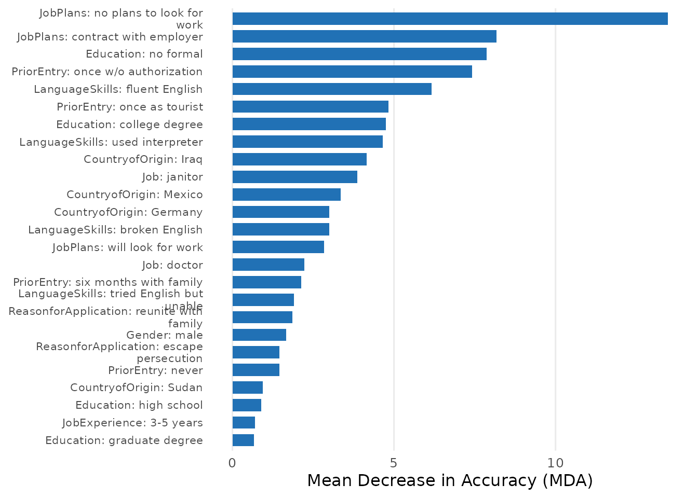
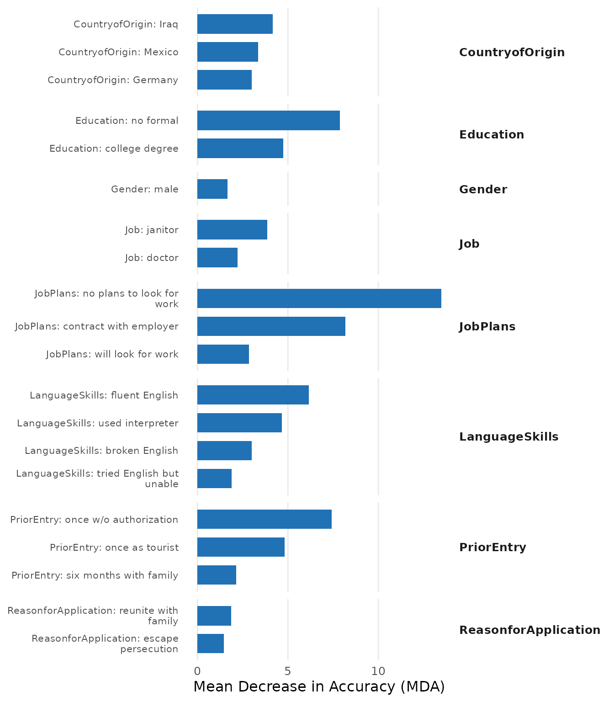
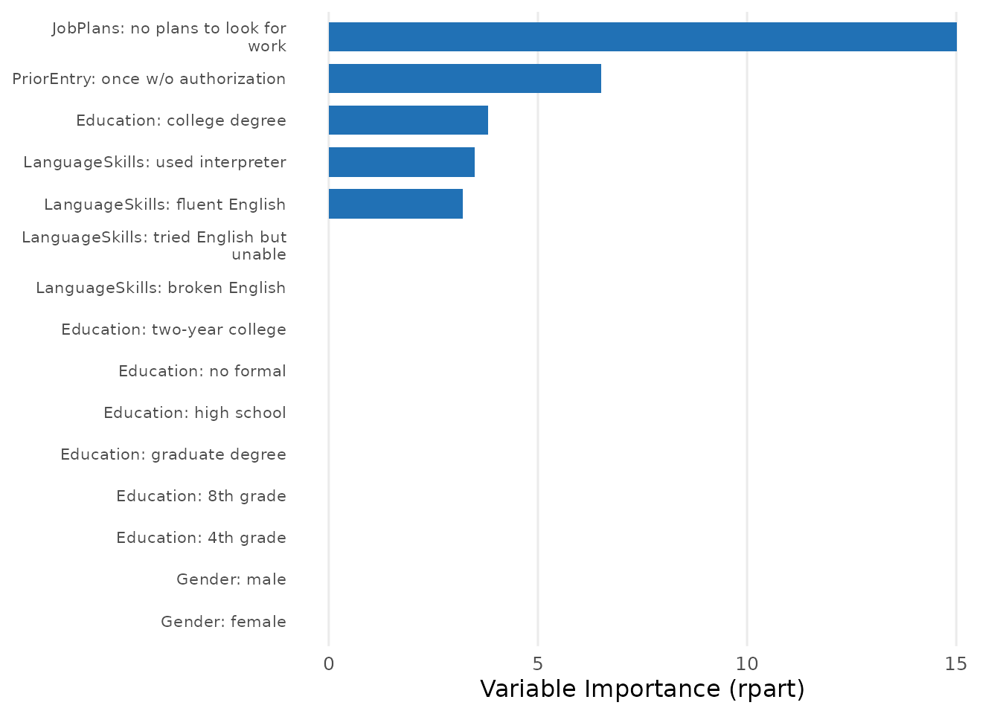
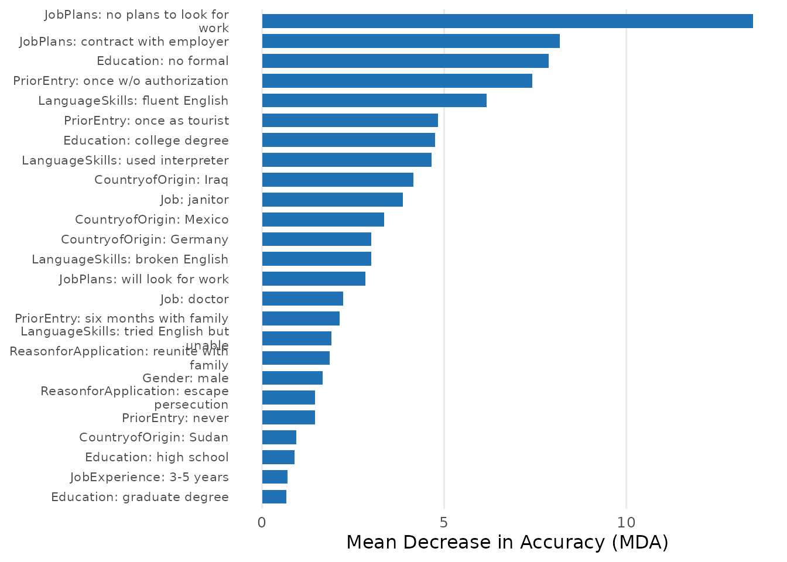
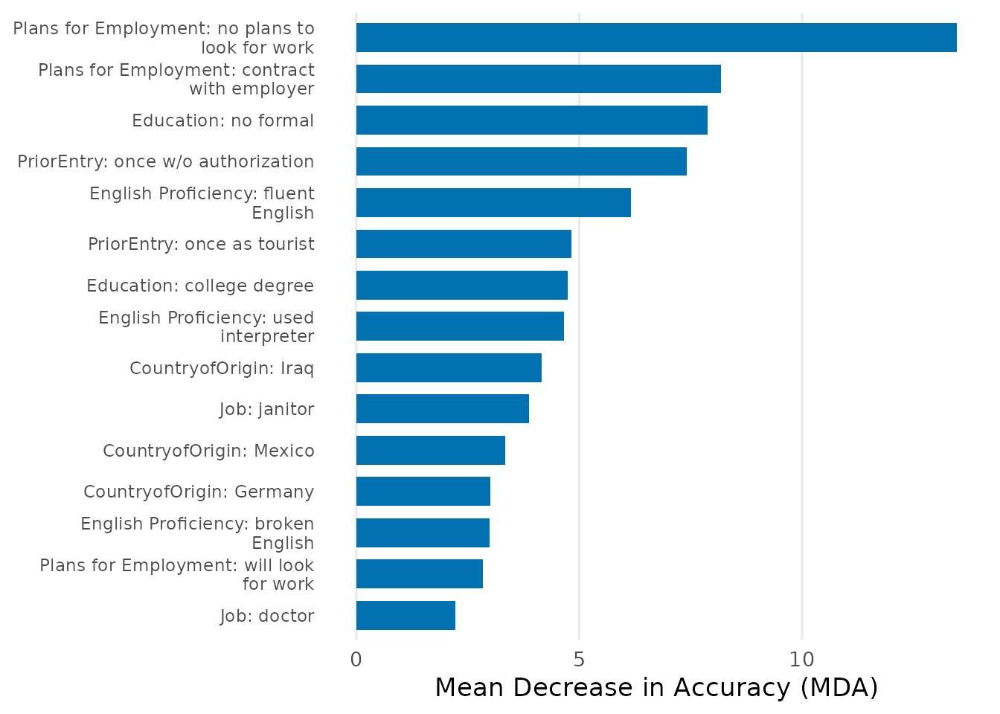

Overview
cjdiag provides tools for attribute-level importance and attendance in conjoint survey experiments — which attribute levels drive choices, how they rank, and which ones respondents ignore. It offers 5 methods:
All methods share a common API: cj_fit() to fit,
print() to view, plot() to visualize, and
importance() to extract standardized results.
Quick Start with Random Forest
rf <- cj_fit(
Chosen_Immigrant ~ Gender + Education + LanguageSkills +
CountryofOrigin + Job + JobExperience + JobPlans +
ReasonforApplication + PriorEntry,
data = immig,
method = "forest"
)
print(rf)
#> Conjoint Random Forest
#> ======================
#>
#> Resolution: levels
#> Trees: 500
#> OOB Error: 40.3%
#> Observations: 2,000
#> Attributes: 9
#> Levels: 50
#>
#> Top 10 levels by MDA:
#>
#> # A tibble: 10 × 5
#> rank attribute level mda root_pct
#> <int> <chr> <chr> <dbl> <dbl>
#> 1 1 JobPlans no plans to look for work 13.5 15.4
#> 2 2 JobPlans contract with employer 8.18 11.2
#> 3 3 Education no formal 7.87 7.4
#> 4 4 PriorEntry once w/o authorization 7.42 10.4
#> 5 5 LanguageSkills fluent English 6.16 8.2
#> 6 6 PriorEntry once as tourist 4.83 2.4
#> 7 7 Education college degree 4.75 6.4
#> 8 8 LanguageSkills used interpreter 4.66 5.6
#> 9 9 CountryofOrigin Iraq 4.15 4.6
#> 10 10 Job janitor 3.87 3Plotting
The default importance plot shows Mean Decrease in Accuracy (MDA) for each attribute level:
plot(rf)
Customization
All plots support palette, font size, label, and theme customization:
plot(rf,
palette = "colorblind",
base_size = 14,
attribute.names = c(LanguageSkills = "English Proficiency",
JobPlans = "Plans for Employment"),
top_n = 15)
Group levels by attribute with visual separators:
plot(rf, group_by_attribute = TRUE, top_n = 20)
Decision Tree
Decision trees reveal the hierarchical structure of choices:
tr <- cj_fit(
Chosen_Immigrant ~ Gender + Education + LanguageSkills +
CountryofOrigin + Job + JobExperience + JobPlans +
ReasonforApplication + PriorEntry,
data = immig,
method = "tree"
)
print(tr)
#> Conjoint Decision Tree
#> ======================
#>
#> Resolution: levels
#> Complexity (cp): 0.005
#> Root split: JobPlansno.plans.to.look.for.work
#> Depth: 4
#> Terminal nodes: 6
#> Observations: 2,000
#> Levels: 50
#>
#> Top 10 levels by importance:
#>
#> # A tibble: 10 × 4
#> rank attribute level importance
#> <int> <chr> <chr> <dbl>
#> 1 1 JobPlans no plans to look for work 15.0
#> 2 2 PriorEntry once w/o authorization 6.51
#> 3 3 Education college degree 3.81
#> 4 4 LanguageSkills used interpreter 3.49
#> 5 5 LanguageSkills fluent English 3.21
#> 6 6 Gender female 0
#> 7 7 Gender male 0
#> 8 8 Education 4th grade 0
#> 9 9 Education 8th grade 0
#> 10 10 Education graduate degree 0
plot(tr, type = "importance", top_n = 15)
Importance Metrics
The importance() function returns a standardized results
tibble from any model:
imp <- importance(rf)
print(imp)
#> Conjoint Importance Metrics
#> ===========================
#>
#> Resolution: levels
#> Method: Random Forest (500 trees)
#> OOB Error: 40.3%
#>
#> Level Importance (top 10 ):
#>
#> # A tibble: 10 × 9
#> rank attribute level mda mdg root_pct class_0 class_1 var_name
#> <int> <chr> <chr> <dbl> <dbl> <dbl> <dbl> <dbl> <chr>
#> 1 1 JobPlans no plans… 13.5 28.2 15.4 12.3 7.25 JobPlan…
#> 2 2 JobPlans contract… 8.18 23.0 11.2 3.70 6.98 JobPlan…
#> 3 3 Education no formal 7.87 18.7 7.4 8.04 2.38 Educati…
#> 4 4 PriorEntry once w/o… 7.42 22.9 10.4 6.87 3.66 PriorEn…
#> 5 5 LanguageSkills fluent E… 6.16 22.3 8.2 2.71 6.00 Languag…
#> 6 6 PriorEntry once as … 4.83 20.3 2.4 1.61 5.25 PriorEn…
#> 7 7 Education college … 4.75 18.9 6.4 0.153 6.16 Educati…
#> 8 8 LanguageSkills used int… 4.66 20.2 5.6 4.91 1.37 Languag…
#> 9 9 CountryofOrigin Iraq 4.15 17.1 4.6 3.53 2.15 Country…
#> 10 10 Job janitor 3.87 18.0 3 2.09 3.36 Jobjani…
plot(imp)
Global Options
Set defaults once and apply everywhere:
set_cjdiag_theme(palette = "colorblind", base_size = 13)
set_cjdiag_labels(
attribute.names = c(
LanguageSkills = "English Proficiency",
JobPlans = "Plans for Employment"
)
)
# Now all plots use colorblind palette and renamed attributes
plot(rf, top_n = 15)
Method Overview
| Method | cj_fit() |
Question Answered |
|---|---|---|
| Random Forest | "forest" |
Which attributes matter most for choices? |
| Decision Tree | "tree" |
How do respondents structure their decisions? |
| CRT/HierNet | "crt" |
Which attribute levels genuinely drive choices? |
| Nested MM | "nmm" |
In what order do attributes settle choices? |
| Marginal R-sq | "marginal_r2" |
Which attributes did each respondent actually use? |